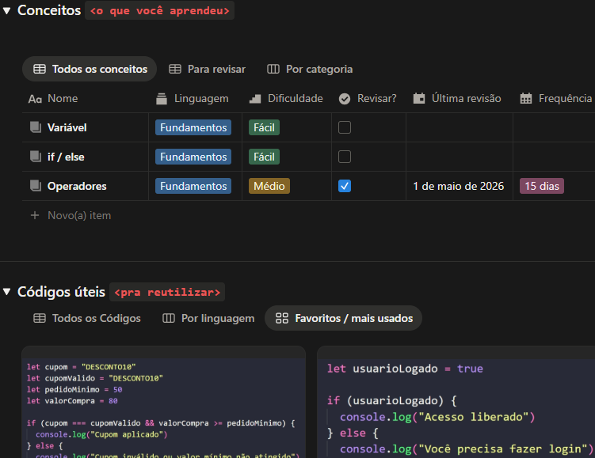

Estudar parecia um monte de informação solta:
Aba aberta, anotação perdida, projeto esquecido e aquela sensação horrível de estar sempre atrasado.
Um sistema simples no Notion pra organizar conceitos, projetos, anotações e códigos, mesmo começando do zero e tendo uma rotina caótica.

Eu tinha a sensação de que sempre precisava me organizar do zero antes de realmente estudar.
Com o tempo, isso foi me cansando mais do que o próprio conteúdo. Eu ia perdendo a vontade de continuar porque tudo parecia desorganizado demais pra acompanhar.
Então eu comecei a montar, aos poucos, um espaço simples, visual e funcional pra reunir tudo num só lugar e parar de me perder no meio de tanto conteúdo.
E assim nasceu o TechFlow.
Tudo em um só lugar: conceitos, projetos, anotações e códigos. Pare de pular entre 15 abas tentando achar o conteúdo.
Dashboard limpo e intuitivo, como o Notion foi feito pra ser. Sem complicações, só clareza.
Funciona com qualquer rotina. Estuda 30min ou 3h por dia? Se adapta perfeitamente.
Anotações de código, conceitos importantes, planejamento de projetos, matérias complementares, revisões automatizadas e espaço para anotações.
Aba aberta, anotação perdida, projeto esquecido e aquela sensação horrível de estar sempre atrasado.
Não porque eu virei a pessoa mais disciplinada do mundo. Mas porque finalmente ficou fácil continuar.
Sistema pronto pra usar em 5 minutos
Link do sistema disponível assim que comprar
Videos curtos mostrando como usar a ferramenta
Mude cores, páginas, tudo do seu jeito
Sempre com as melhorias que você precisa
Não complicar ainda mais sua rotina
Aprender coisas novas já é desafiador o suficiente. Se organizar não precisa ser.
R$ 29,90
Perfeito pra quem tá começando. O sistema é simples e visual, feito exatamente pra quem ainda não sabe como organizar os estudos.
Não! Funciona 100% na versão gratuita do Notion. Sem custos extras.
Sim! O template é totalmente responsivo e funciona perfeitamente no app do Notion mobile ou no navegador.
O template já é bem intuitivo, mas se surgir alguma dúvida ou problema, você pode me chamar no Instagram @nathdelima.
Totalmente! É seu template. Pode mudar cores, adicionar/remover páginas, tudo do seu jeito.
Apesar de ter sido criado pensando em estudantes de programação, ele funciona perfeitamente pra outras áreas da tecnologia e estudos autodidatas.
Você só precisa de um sistema que realmente te ajude a continuar.